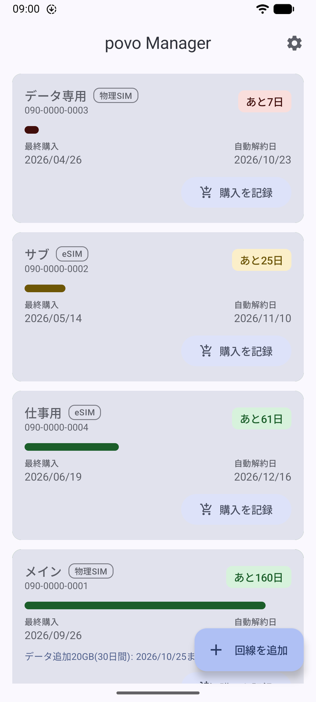
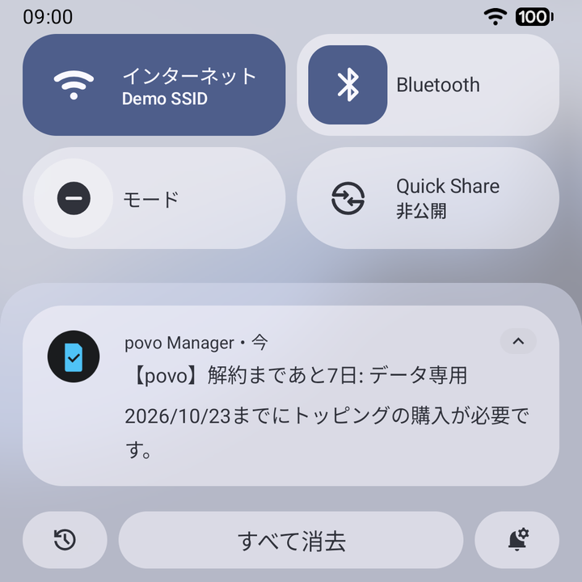
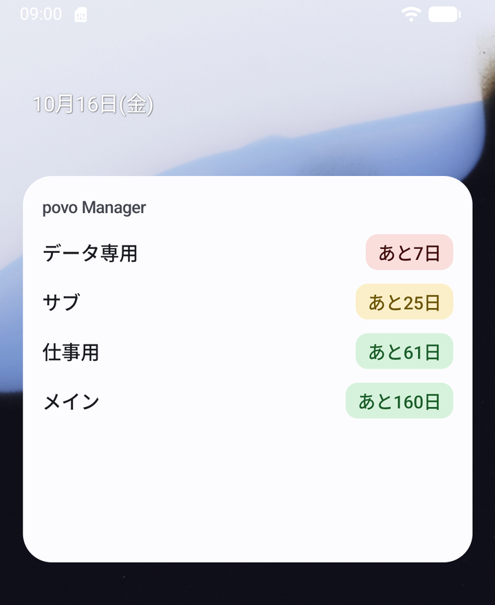
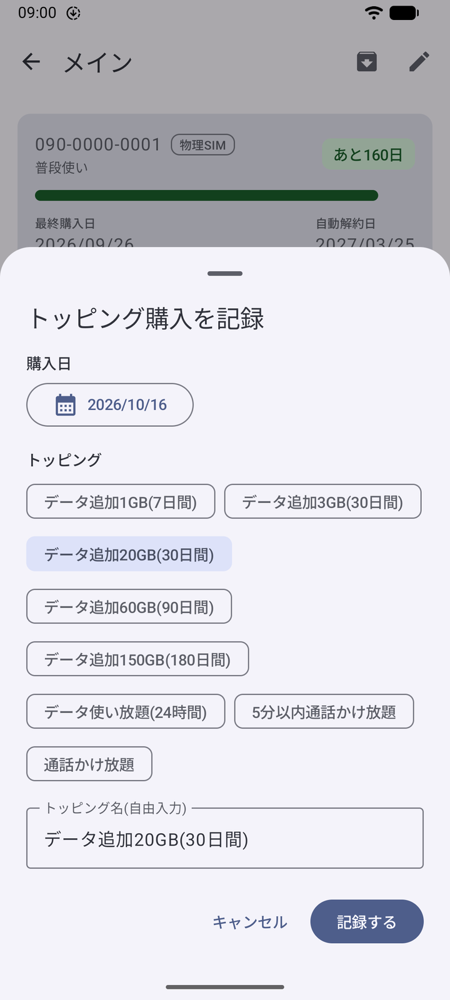
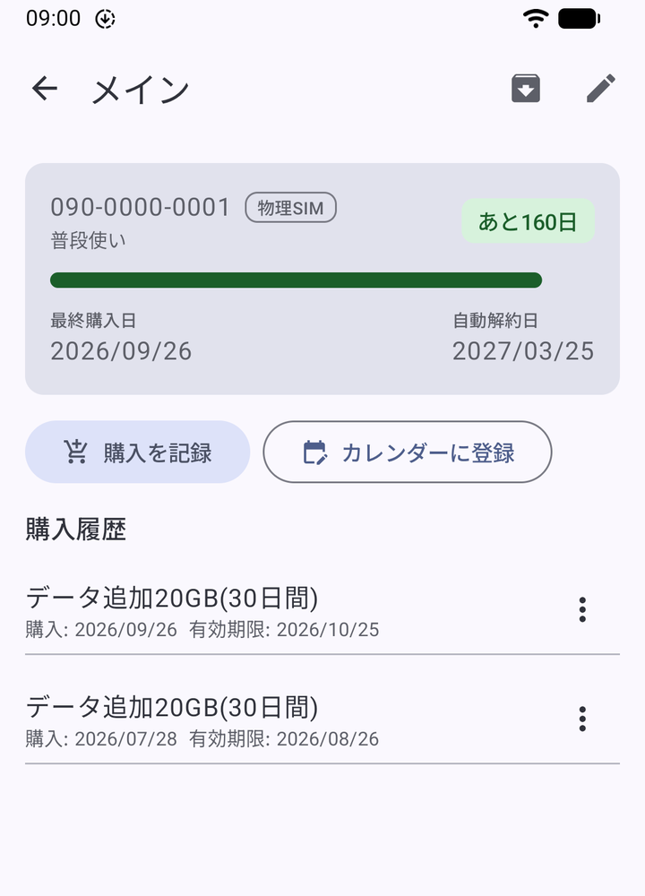
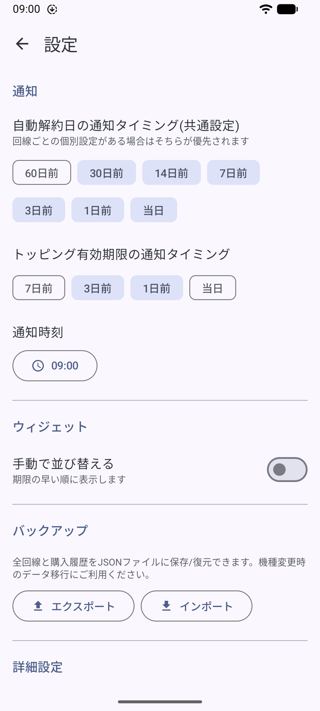

povo の自動解約日を管理するアプリ
最後にトッピングを買った日から180日。povo Manager は回線ごとに残り日数を出して、期限が近づいたら通知します。
Android 8.0 以降
あと25日
自動解約日
日付を変えると、自動で計算し直します。アプリでは、複数回線の管理や解約日の通知ができます。

回線をまとめて一覧に
電話番号と、最後にトッピングを買った日を入れるだけです。回線がカードで並び、残り日数の少ない順にひと目でわかります。
残り日数でバッジと進捗バーの色が変わります。
- 31日以上
- 30日以内
- 14日以内
- 7日以内・期限切れ
期限の前に通知でお知らせ
初期設定では、自動解約日の30日前、14日前、7日前、3日前、前日、当日に通知します。
- 30日前
- 14日前
- 7日前
- 3日前
- 前日
- 当日
回線ごとに変えられる
メイン回線は30日前から、捨ててもいい回線は前日だけ、のように回線ごとに通知する日を設定できます。
トッピングの期限も
データ追加などのトッピングにも有効期限があります。初期設定で3日前と前日に知らせます。


アプリを開かずに確かめる
ホーム画面のウィジェットに、全部の回線の残り日数をアプリと同じ色で並べます。ウィジェットに入りきらない分はスクロールで見られます。

買ったら記録する
トッピングを買ったら、回線を開いて購入日を記録します。よく使うトッピングは一覧から選べて、有効期限も自動で入ります。一覧にないものは名前を手で入れてください。
| 一覧にあるトッピング | 有効期間 |
|---|---|
| データ追加1GB | 7日 |
| データ追加3GB | 30日 |
| データ追加20GB | 30日 |
| データ追加60GB | 90日 |
| データ追加150GB | 180日 |
| データ使い放題（24時間） | 1日 |
| 5分以内通話かけ放題 | 期限なし |
| 通話かけ放題 | 期限なし |
そのほかにできること
- カレンダーに登録
- 回線の画面から、自動解約日を標準のカレンダーアプリに予定として入れられます。
- バックアップ
- 回線と購入履歴をバックアップファイルに書き出せます。読み込むときは、今のデータに足すか、全部入れ替えるかを選べます。
- 解約した回線をアーカイブ
- もう使わない回線はアーカイブに移せます。一覧からは消えて、記録は残ります。


インストール
Google Play ストアでは配布していません。APKを直接入れるか、Obtainium を使って更新まで任せるかを選べます。
Obtainium で自動更新
Obtainium は、GitHub で配布されているアプリの新しい版を見つけてくれるアプリです。povo Manager を登録しておくと、新しい版が出たときに通知が来て、そのまま更新できます。
ファイルは GitHub の Releases に置いてあり、GitHub Actions がソースコードからビルドしたものです。
よくある質問
povo の180日ルールとは？
povo 2.0 では、180日間有料トッピングを買わず、同じ期間の通話やSMSなどの従量料金の合計が660円を超えない場合、利用停止や契約解除になることがあるとされています。
条件は変わることがあるので、povo の公式サイトで確認してください。
通話料が660円を超えている月もありますが、日付は合っていますか？
povo Manager はトッピングを買った日だけで数えていて、通話やSMSの料金は見ていません。そのため表示される自動解約日は、実際より早いことはあっても、遅いことはありません。
電話番号などのデータはどこに保存されますか？
スマートフォンの中だけです。povo Manager はインターネット接続の権限を持っていないので、登録した電話番号やメモが外部に送られることはありません。機種変更のときはバックアップファイルに書き出して移してください。
iPhone版はありますか？
ありません。Android 8.0 以降のスマートフォンで使えます。
povo の公式アプリですか？
違います。個人が作っている非公式のアプリで、povo や KDDI とは関係ありません。不具合や要望は GitHub の Issues に書いてもらえると助かります。